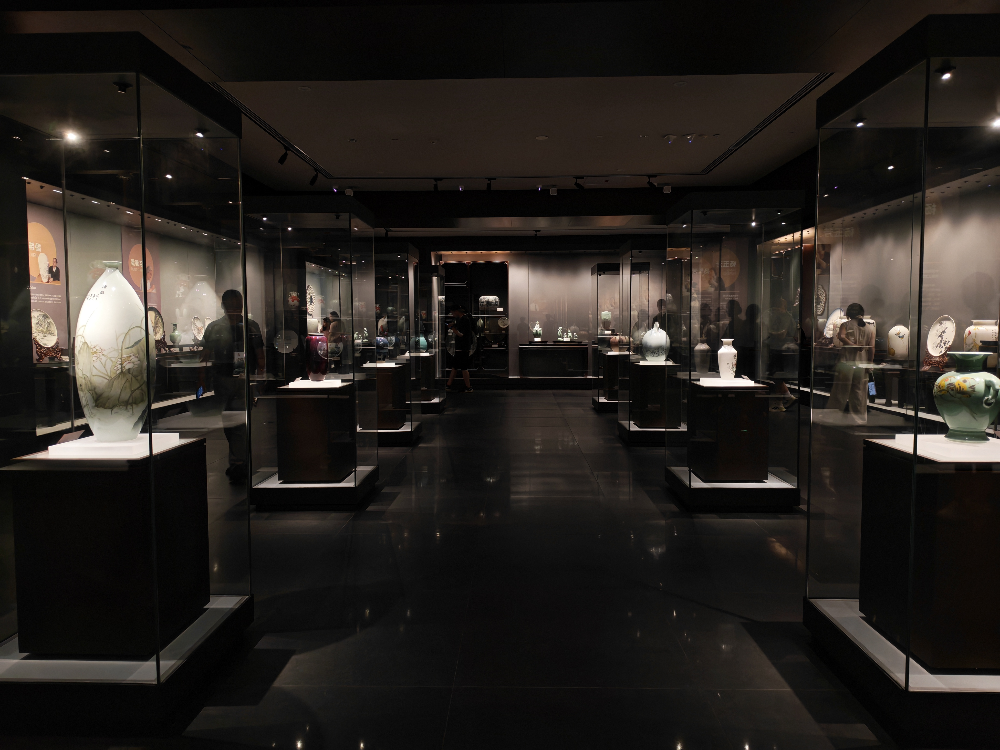
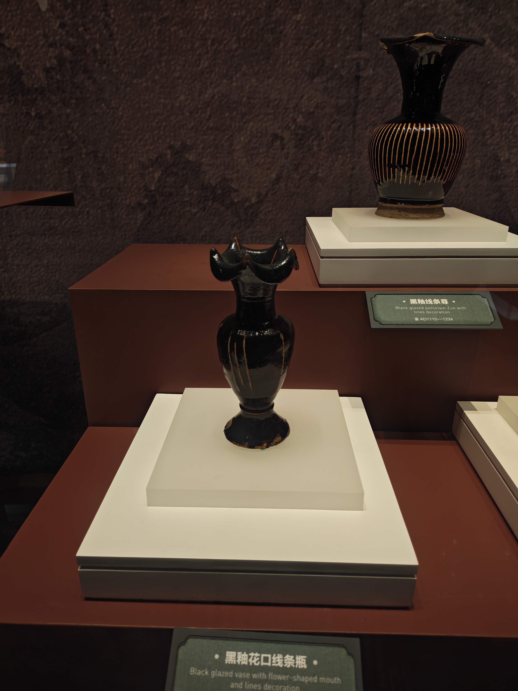
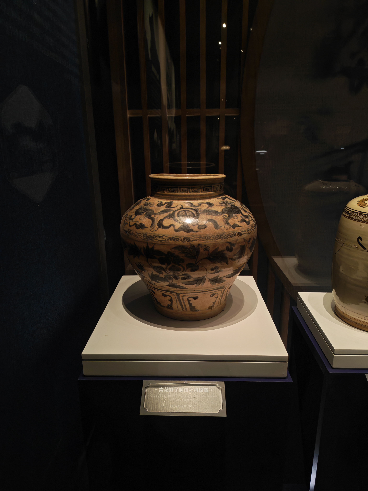
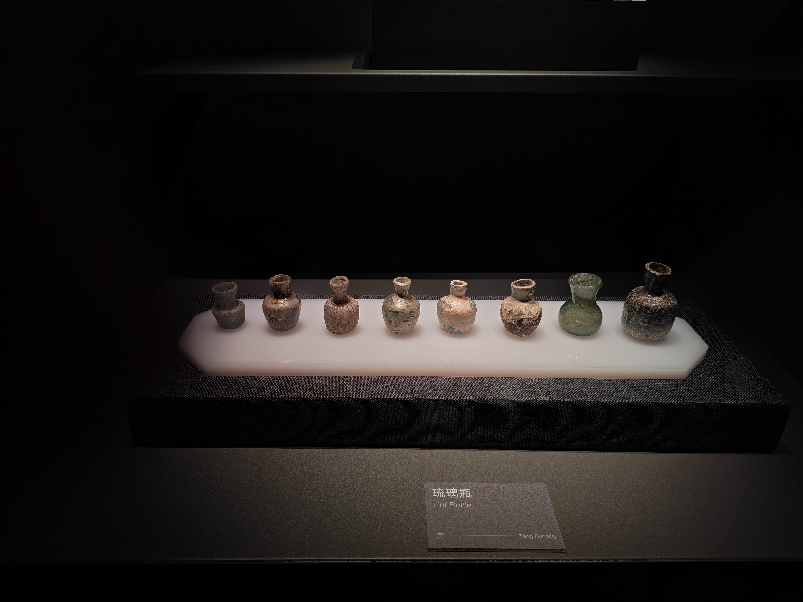
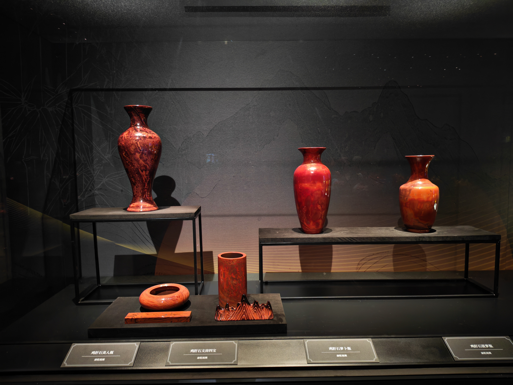
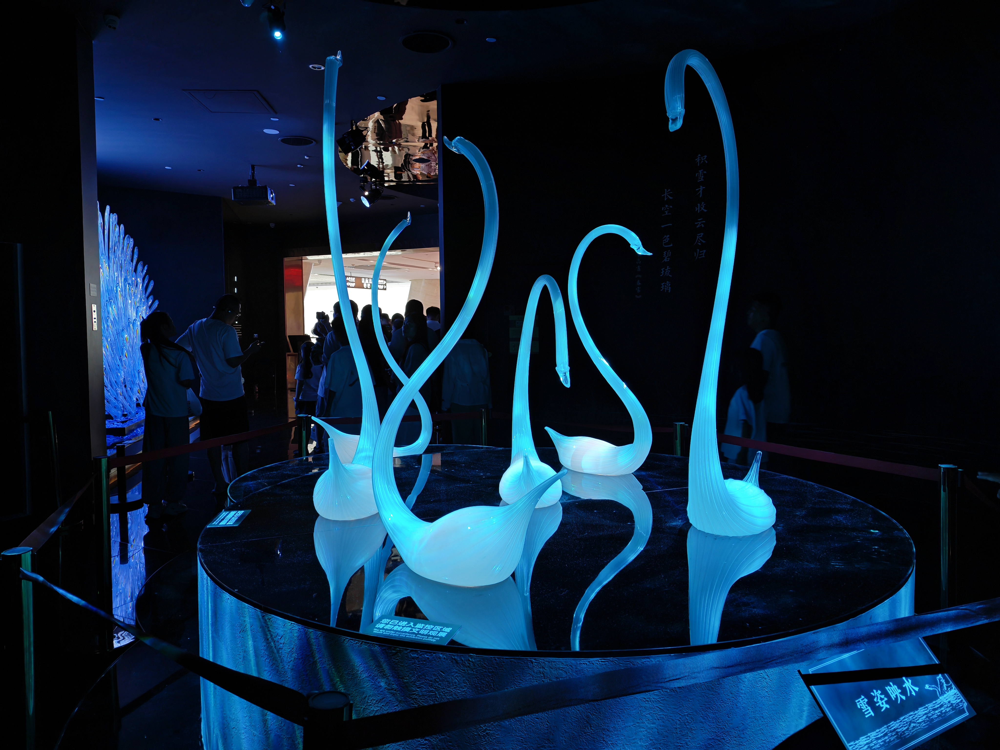

古陶与古琉璃
从早期器物、釉色与玻璃小瓶中，追溯材料最初被塑造和烧成的方式。
02 / MUSEUM FIELD VISIT · COMPLETED
我们已完成淄博陶瓷琉璃博物馆走访。从古陶瓷、古琉璃到近现代作品，器物的变化让材料、技艺与生活的关系变得可见。
向下，进入展陈 ↓FIELD OBSERVATION / 现场观察
沿着展厅行进，我们先在古陶瓷与早期琉璃器物中辨认材料和器型的起点；随后在釉色、纹样与日用器的变化中，看见技艺如何与审美、社会生活一同演变。
近现代展区则让我们看到，陶瓷和琉璃并未停留在“传统”之中：它们进入设计、礼赠、城市记忆与当代艺术，继续拥有新的形态。
从早期器物、釉色与玻璃小瓶中，追溯材料最初被塑造和烧成的方式。
青花、粉彩、雕塑与日用器，记录着功能、工艺与审美的相互变化。
现代陶瓷、琉璃艺术与沉浸式装置，让传统材料在新的语境中继续发光。

OUR VISIT / 2026 SUMMER
PHOTO NOTES / 实拍选录
从古代器物的沉静质感，到近现代陶瓷的丰富色彩，再到当代琉璃装置的通透光感——以下照片均为团队走访实拍。





OUR LENS / 走访收获
这次走访让我们更清楚地认识到：陶瓷与琉璃的变化，并不只是器物外观的变化。原料、火候、造型、纹样与使用场景，始终与一座城市的生产、审美和生活相连。